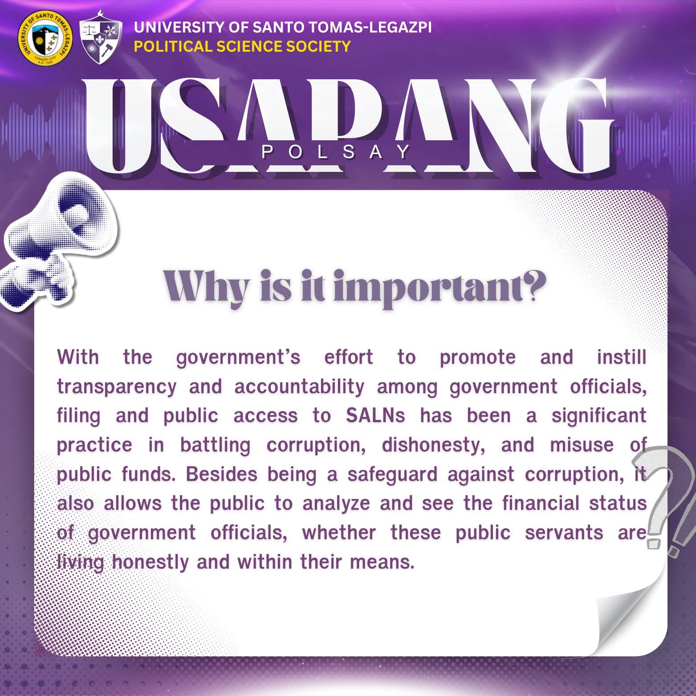
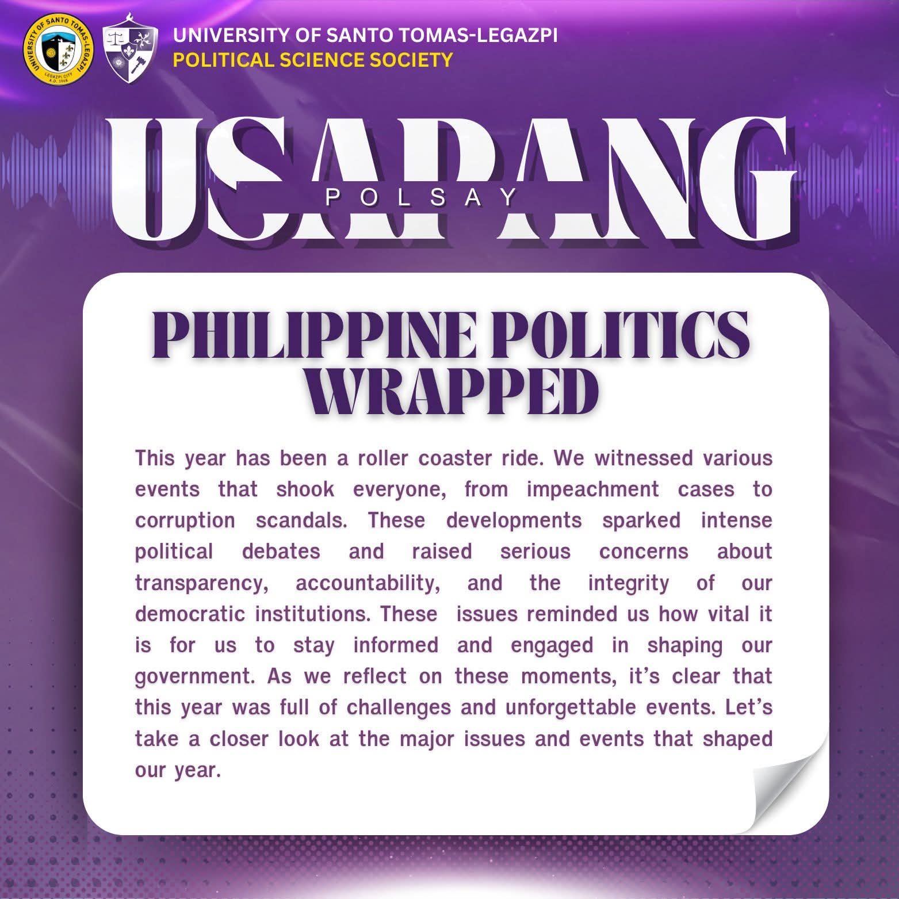
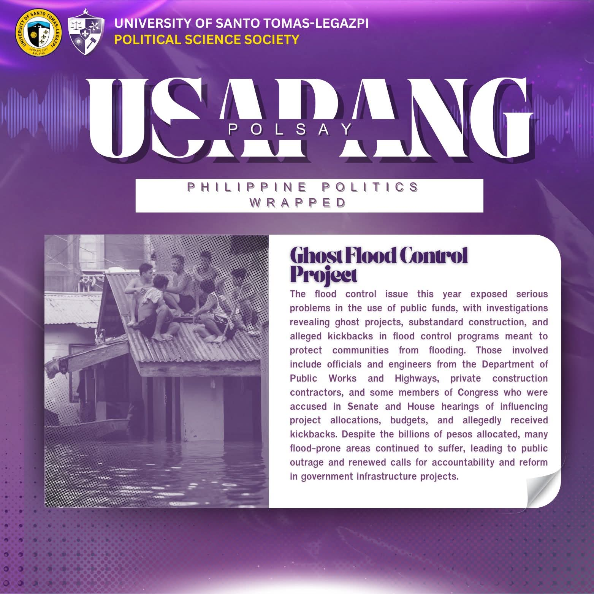
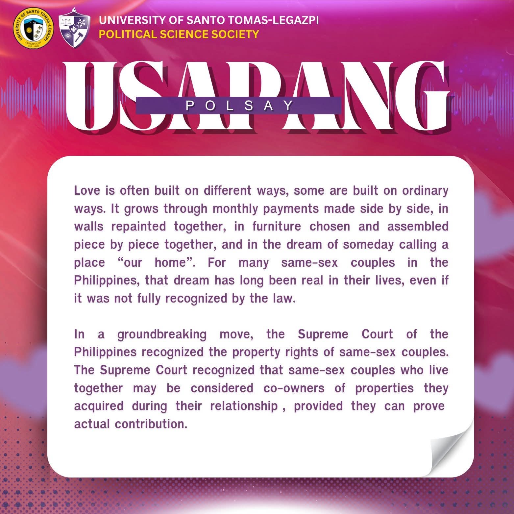
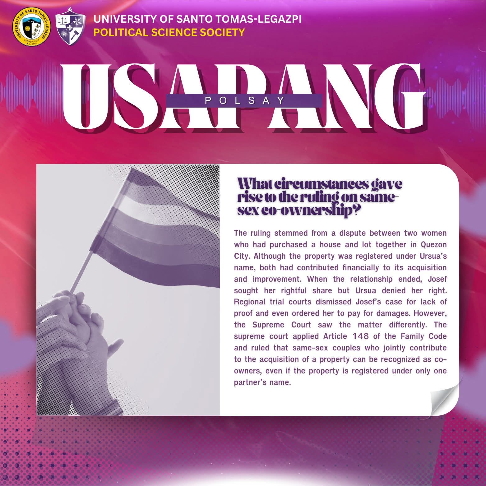
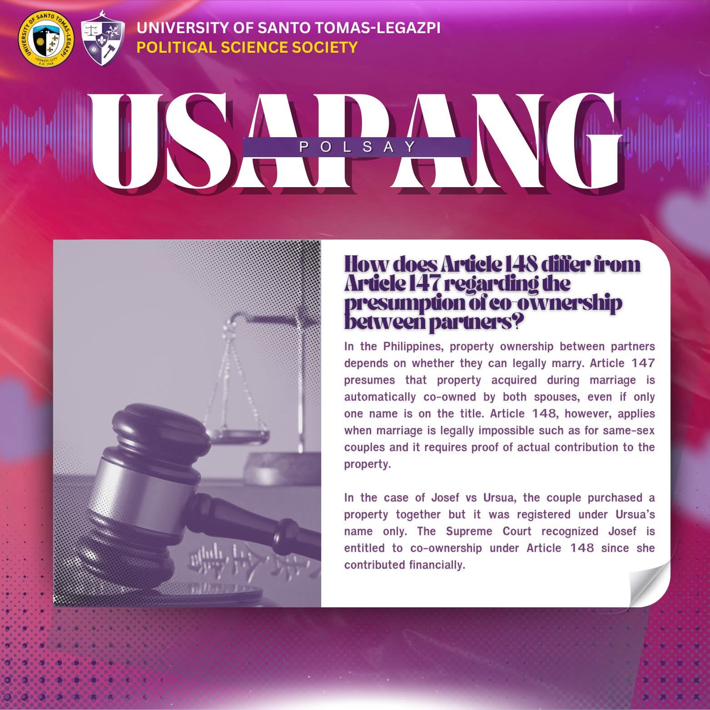
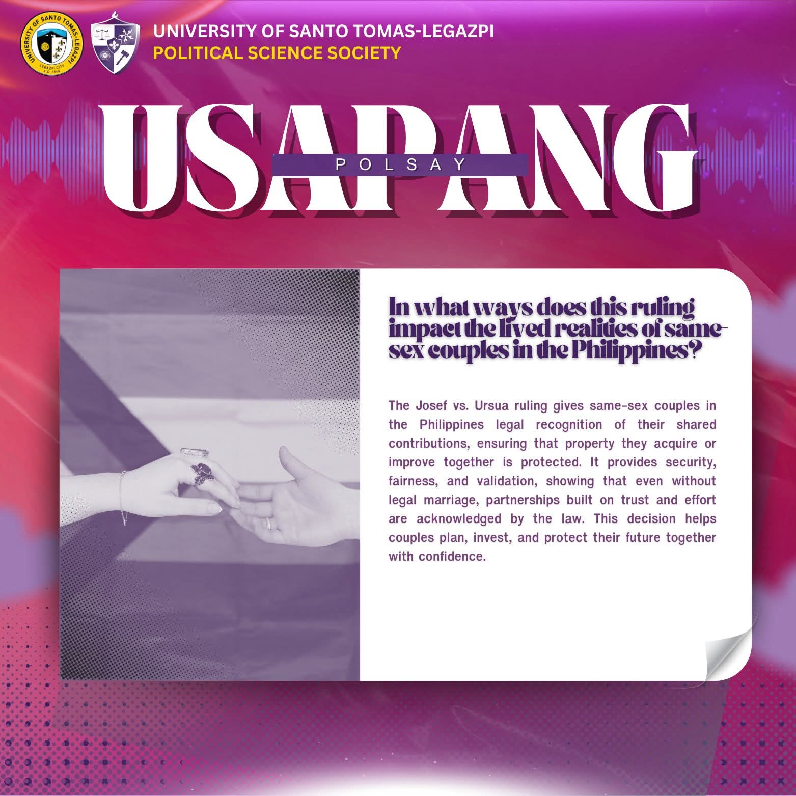
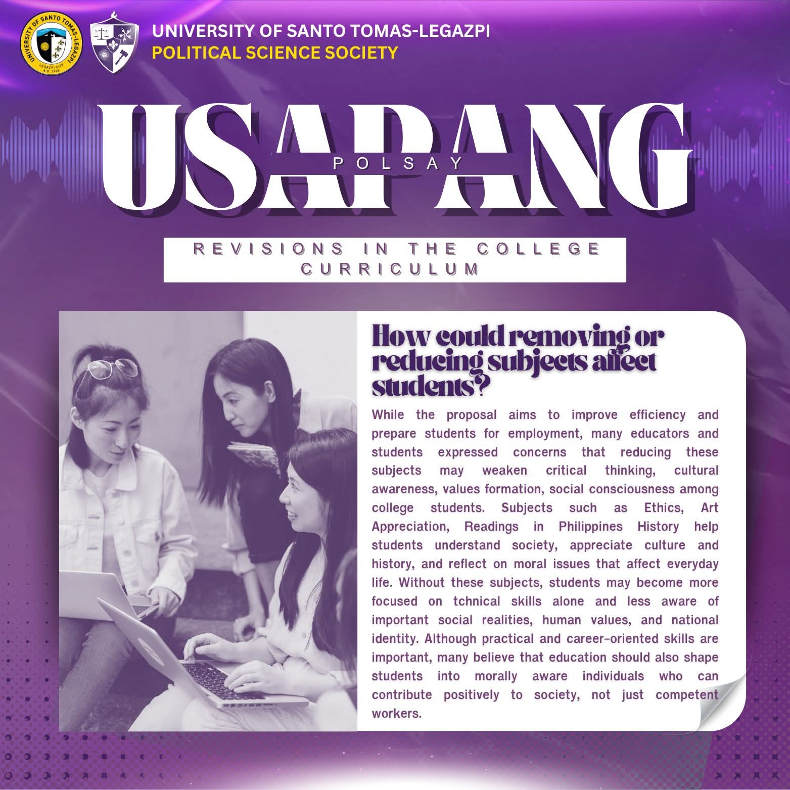
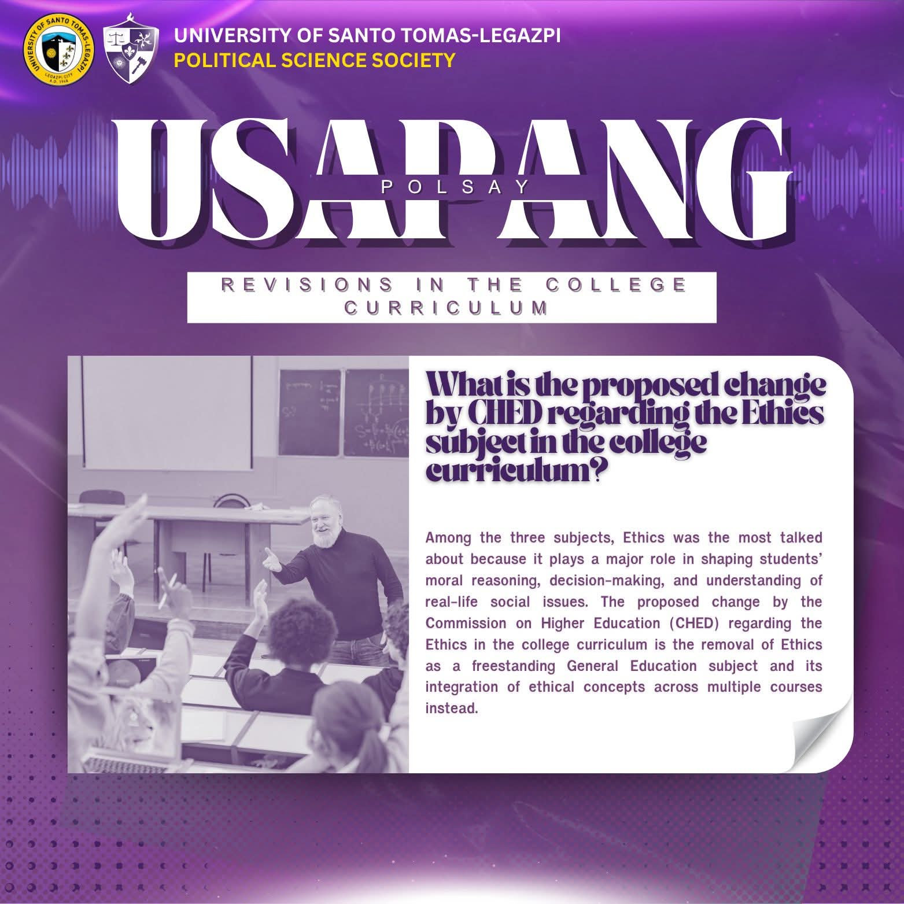
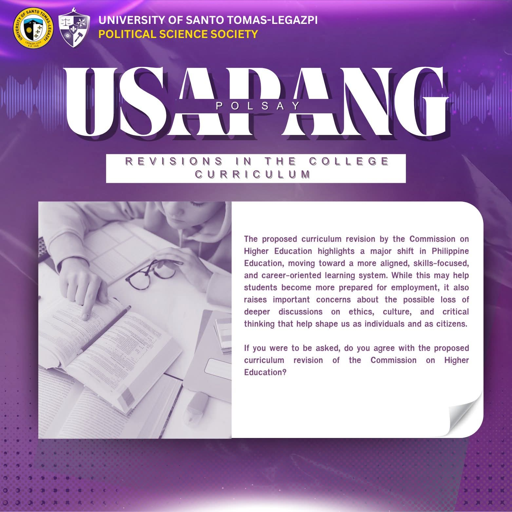

Usapang PolSay is an informative content series that discusses current political issues and significant events happening both in the Philippines and internationally.
Through simplified discussions, summaries, and political wrap-ups, the series helps students become more aware and informed about contemporary political developments, controversies, governance issues, and societal concerns.









